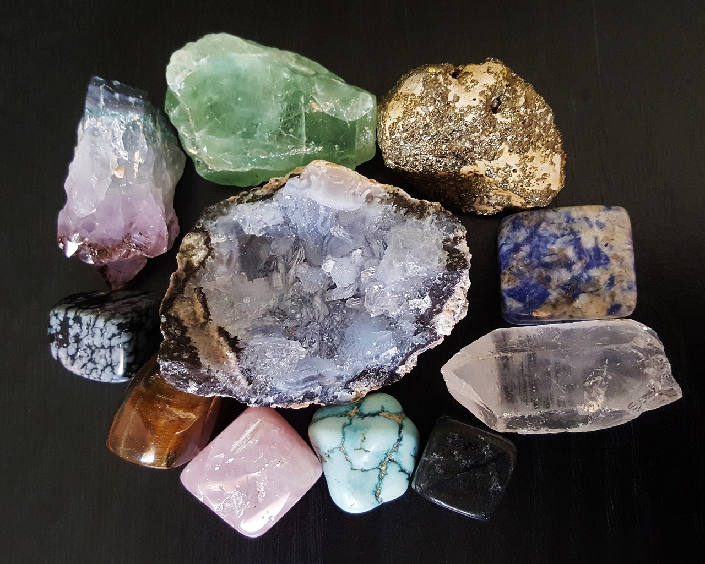
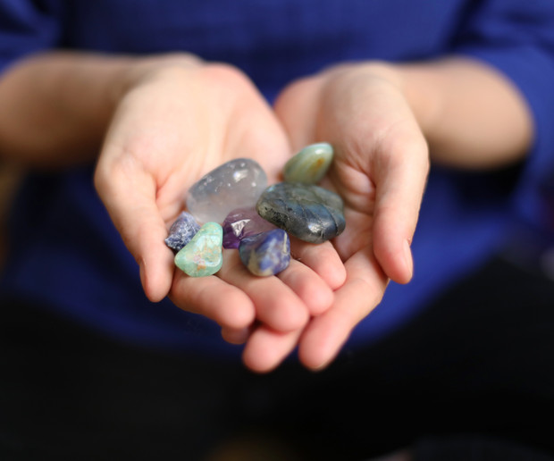
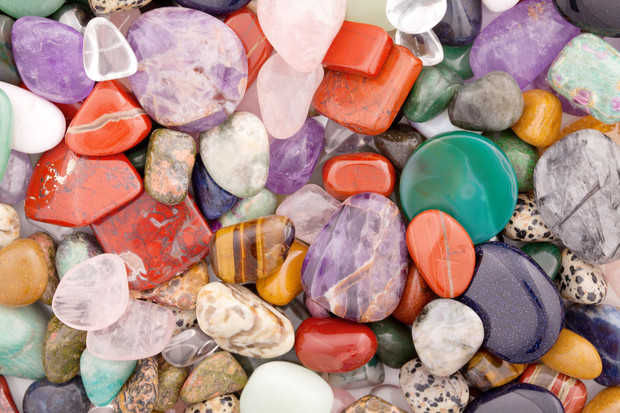

Estás en la página 3
CUARZOS
Los cuarzos son uno de los minerales más abundantes en la corteza terrestre, los cuales se componen por sílice, es decir, una fusión de agua y arena que, a través de miles de años, se convierten en cristales.
Ya sean de tono transparente, blanco o colorido, estos cristales acumulan energía, por lo que son muy utilizados en joyas y amuletos. Además, los cuarzos se distinguen por su dureza y resistencia.

El cuarzo es pura energía universal (materia prima del universo). Es el ADN de la tierra y debido a sus propiedades moleculares y a través de una descarga eléctrica es capaz de transformar, absorber, equilibrar y proyectar energía en la masa con la que toma contacto.
Las propiedades de los cuarzos se asocian con su color, ya que los minerales que contienen son la base de sus propiedades energéticas. A continuación, compartimos las funciones de los cuarzos según su tonalidad.

TIPOS DE CUARZOS
CUARZO AMATISTA
El cuarzo amatista es una piedra de color morado ayuda a controlar el estrés, conciliar el sueño y ordenar la mente para solucionar problemas.
CUARZO TRANSPARENTE
Este cuarzo ayuda a despejar la mente, alcanzar el balance y la armonía. También, se cree que estos se pueden llenar de energía positiva a través de mantras.
CUARZO ROSA
El cuarzo rosa simboliza el amor propio, de familia, de amigos o romántico, aunque también se considera un liberador de emociones negativas y tóxicas.
CUARZO CITRINO
El cuarzo citrino es una variedad del cuarzo amarillo. Su nombre proviene del latin “citrus “que significa “limón”. El color natural del cuarzo citrino es entre amarillo y anaranjado.
CUARZO TURQUESA
Este tipo de piedra se considera un puente entre la tierra y el cielo, que ayuda a la sanación física y mental del cuerpo, así como a mejorar la comunicación.
CUARZO ÁGATA
Este cuarzo es perfecto para alcanzar un balance en tu vida, mantenerte concentrado y seguro de ti mismo.
CUARZO AQUAMARINA
Este color simula el mar, por lo que protege a la mente de vibraciones negativas y puede ayudar a rejuvenecer la mente, el cuerpo y el espíritu.
CUARZO JADE
Esta piedra atrae la buena fortuna, la prosperidad y la abundancia, aunque también se considera como un elemento para seguir un camino acertado.
CUARZO OBSIDIANA
Este cuarzo ayuda a absorber la energía tóxica para acabar con patrones dañinos. Además, es un símbolo de elegancia por su color negro y brillante.
CUARZO PIRITA
El color dorado de este cuarzo atrae la abundancia y la riqueza, además de servir como un escudo protector de malas energías.
CUARZO LAPIS LAZULI
Esta piedra ayuda a desarrollar el espíritu, por lo que se utiliza para tener una mayor conciencia sobre ti mismo y lo que te rodea.
